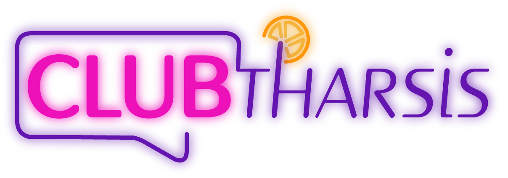
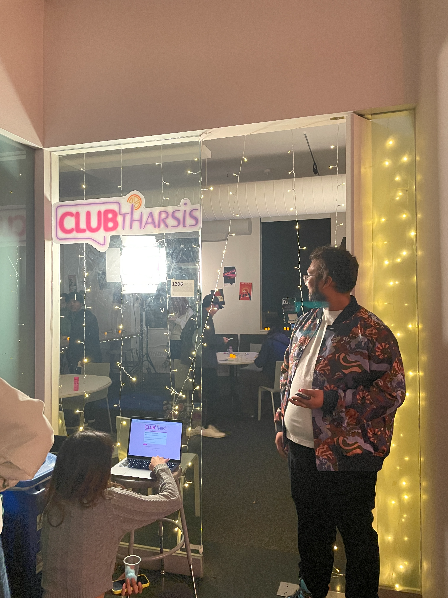
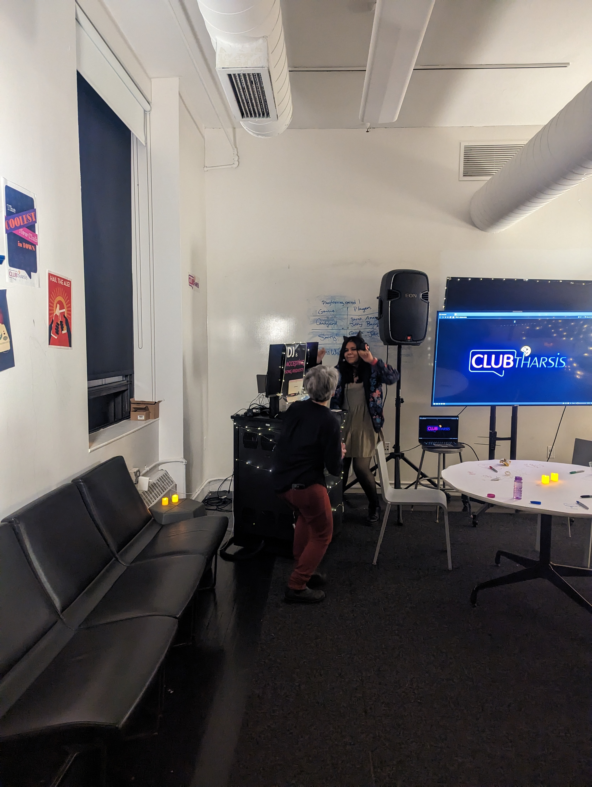
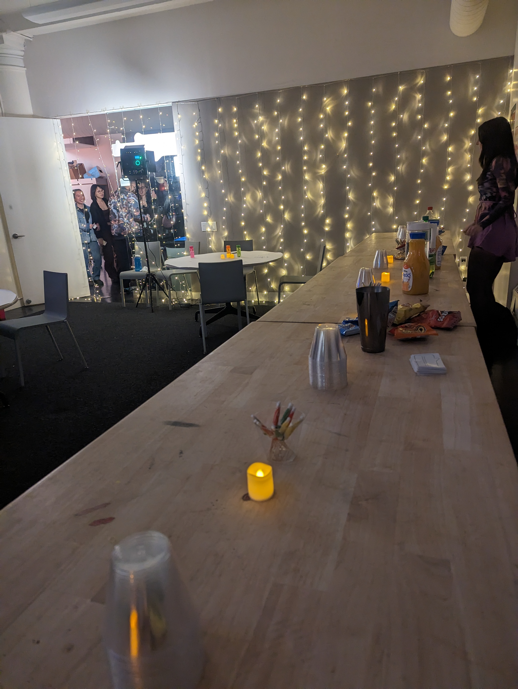
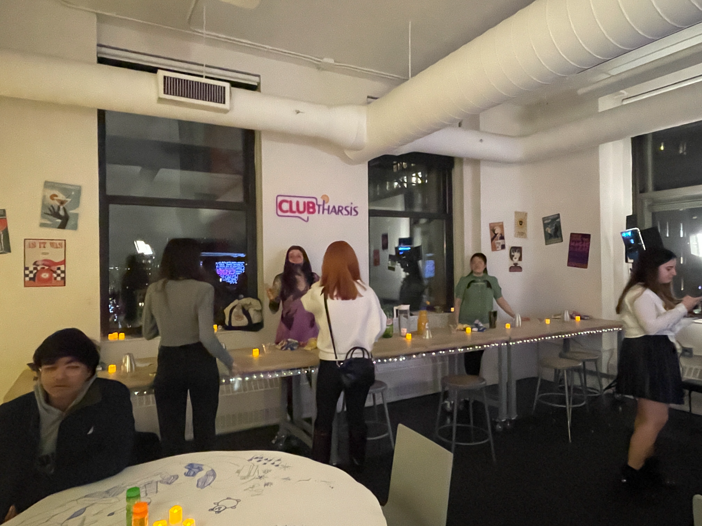
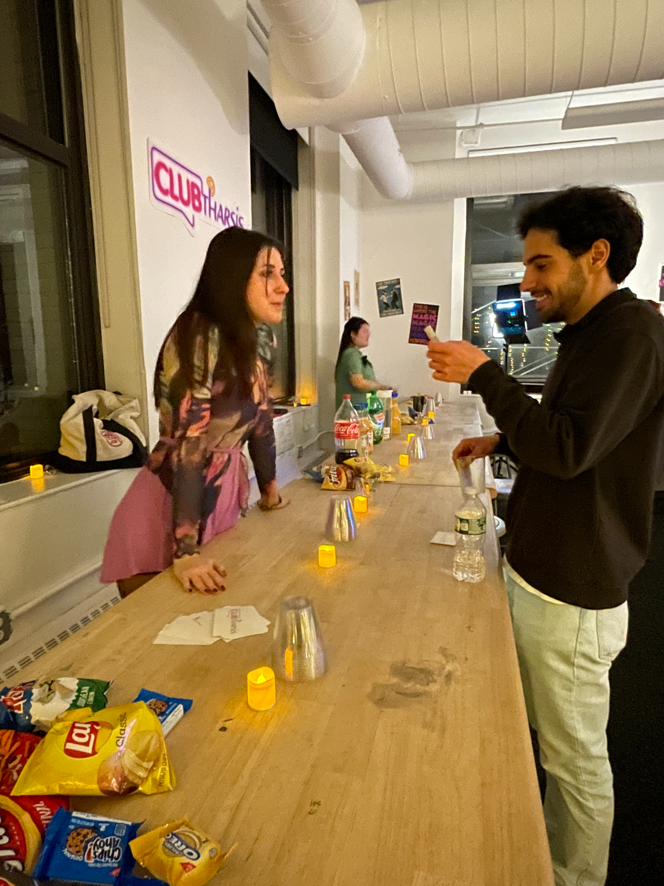
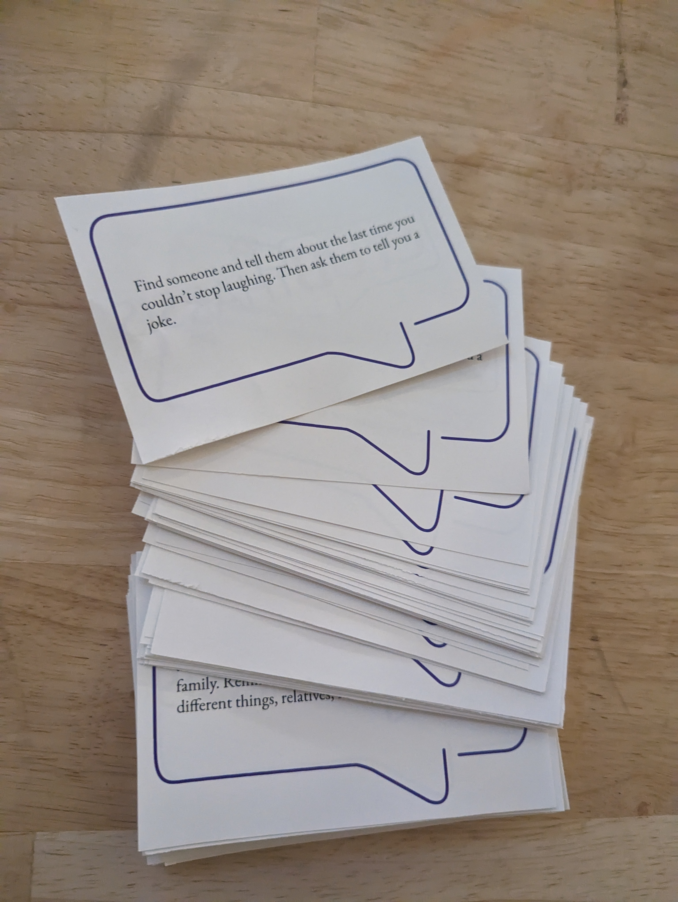
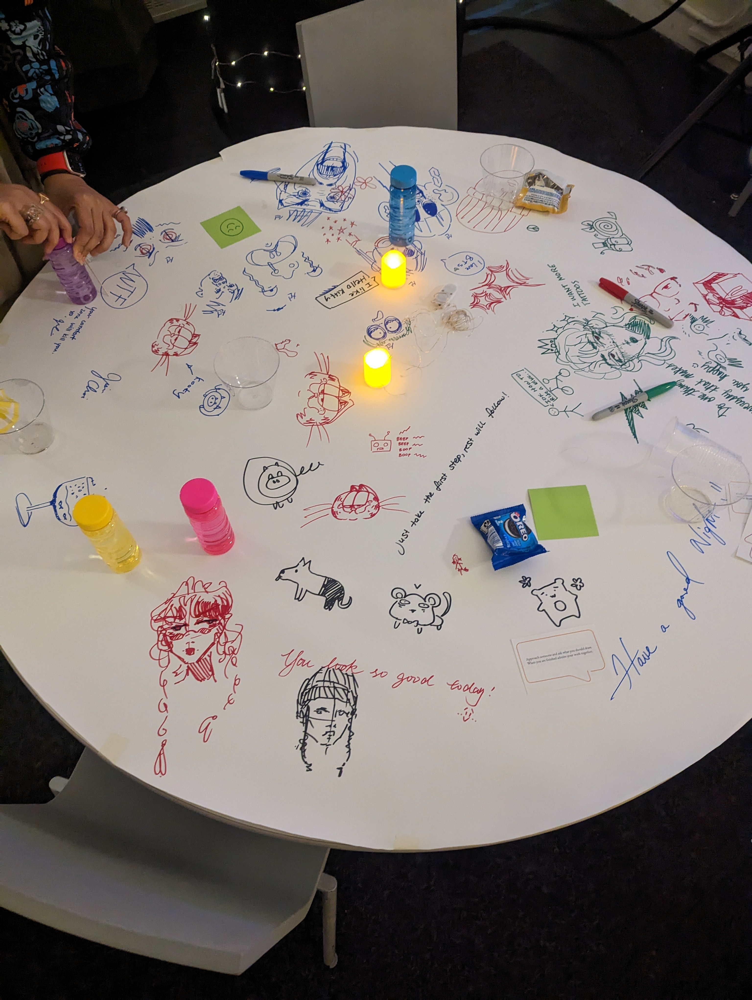
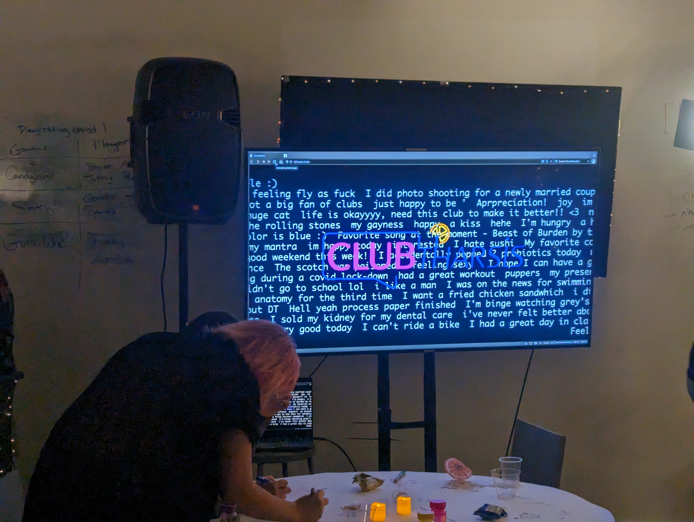
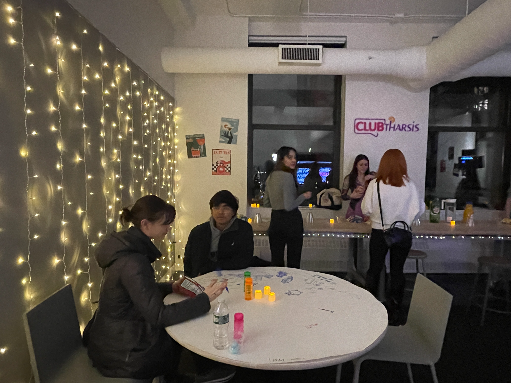

CLUBtharsis
Undergrad

For this project, we got the prompt of Absorbing Vulnerable Fun.
I collaborated with three other people on this project, they are Myles House, Yash Goyal, and Mahima Jain, and I was mainly responsible of the visual identity of CLUBtharsis, including the design of the logo, some posters, and design of the prompts.
We created this bar scene of a speakeasy vibe, and named the bar CLUBtharsis, which means Club Catharsis.
Our intention of this performance is to create moments of a less guarded and open connection, so people can feel some vulnerability through connection.
Some elements of the experience are:
- The Bar that has drinks and snacks
- The DJ Area that is open for song requests
- The Bouncer that welcome people and introduce them to the vibe of the experience
- Prompts people need to complete to get anything from the bar or request songs
- Sitting area that also let people draw at
- A TV as a place to share
To enter the bar, people well be greeted by the bouncer, and will be requested to type in anything they would like to share. It will show up anonymously on the TV once they submitted it. Each person who shared will get a stamp on their hand, so they won't be asked to share again when they enter the bar again.
People can do anything once they entered. However, if they want anything from the bar or want to request a song, they will be asked to complete a prompt, that could be vulnerable for some people, especially intervals. However, because of the vibe we created, people are likely to open up themselves and complete the prompt, even they will never do that in their regular days.
Some photos from the performance








